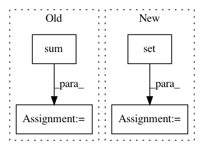

0ed3e9e8b5383390506772029f1afa9f1f90819f,demo_log_odds_ratio_prior.py,,,#,9
Before Change
nlp=nlp).build()
term_freq_df = corpus.get_term_freq_df()
frequencies_scaled = scale(np.log(term_freq_df.sum(axis=1).values))
zeta_i_j = (LogOddsRatioUninformativeDirichletPrior()
.get_zeta_i_j_given_separate_counts(term_freq_df["democrat freq"],
term_freq_df["republican freq"]))
zeta_scaled_for_charting = scale_neg_1_to_1_with_zero_mean_abs_max(zeta_i_j)
html = produce_scattertext_explorer(corpus,
category="democrat",
category_name="Democratic",
not_category_name="Republican",
minimum_term_frequency=5,
width_in_pixels=1000,
x_coords=frequencies_scaled,
y_coords=zeta_scaled_for_charting,
scores=zeta_i_j,
sort_by_dist=False,
metadata=convention_df["speaker"],
x_label="Log Frequency",
y_label="Log Odds Ratio w/ Prior (a_w=0.01)")
file_name = "demo_log_odds_ratio_prior.html"
open(file_name, "wb").write(html.encode("utf-8"))
print("Open %s in Chrome or Firefox." % file_name)
After Change
.where(lambda x: x.corpus > 0).dropna()
)
bg_df.background += bg_df.corpus
corpus_bg = corpus.remove_terms(set(corpus.get_terms()) - set(bg_df.index))
priors = (corpus_bg
.get_term_and_background_counts()
.reindex(corpus_bg.get_terms())["background"]
)
term_scorer = LogOddsRatioInformativeDirichletPrior(priors.values, 10)
tooltip_context = """(function(d) {
return d.term+"<br/>Count ratio (per 25k): "+d.cat25k+":"+d.ncat25k+"<br/>Z-score: "+ Number(Math.round(d.os+"e3")+"e-3");
In pattern: SUPERPATTERN
Frequency: 4
Non-data size: 4
Instances
Project Name: JasonKessler/scattertext
Commit Name: 0ed3e9e8b5383390506772029f1afa9f1f90819f
Time: 2018-01-19
Author: jason.kessler@gmail.com
File Name: demo_log_odds_ratio_prior.py
Class Name:
Method Name:
Project Name: automl/SMAC3
Commit Name: 2402c8a3c28f5c6faf9931fe97b6516b7c426edb
Time: 2016-02-12
Author: lindauer@cs.uni-freiburg.de
File Name: smac/smbo/intensification.py
Class Name: Intensifier
Method Name: intensify
Project Name: bokeh/bokeh
Commit Name: f1bc5b054e29f6d8e948fe7222936a2b0a975535
Time: 2019-10-07
Author: mattpap@gmail.com
File Name: bokeh/util/compiler.py
Class Name:
Method Name: _bundle_models
Project Name: etal/cnvkit
Commit Name: 2654a34e8654f199e7d5f86d7115f3cb4233f2dc
Time: 2016-12-01
Author: eric.talevich@gmail.com
File Name: cnvlib/tabio/vcfio.py
Class Name:
Method Name: _extract_genotype